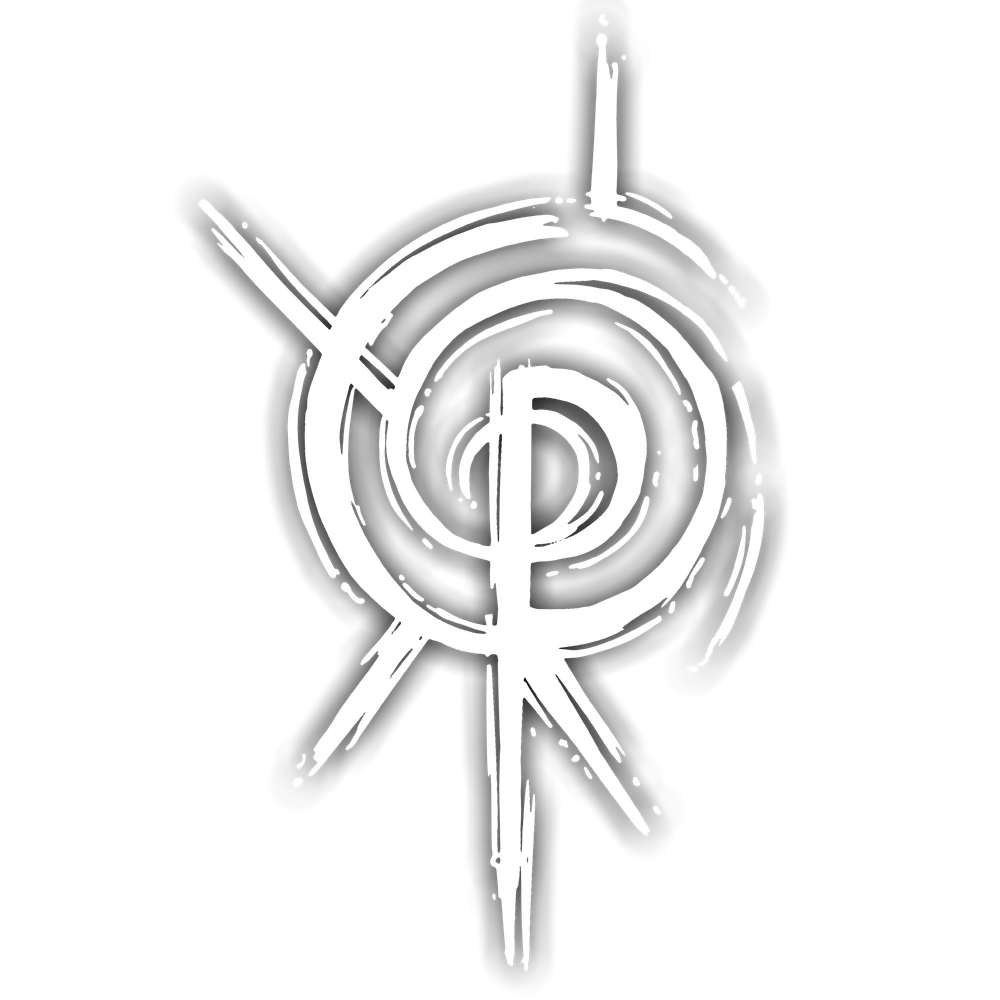
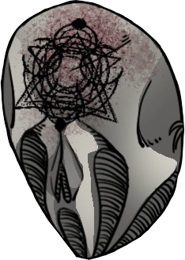
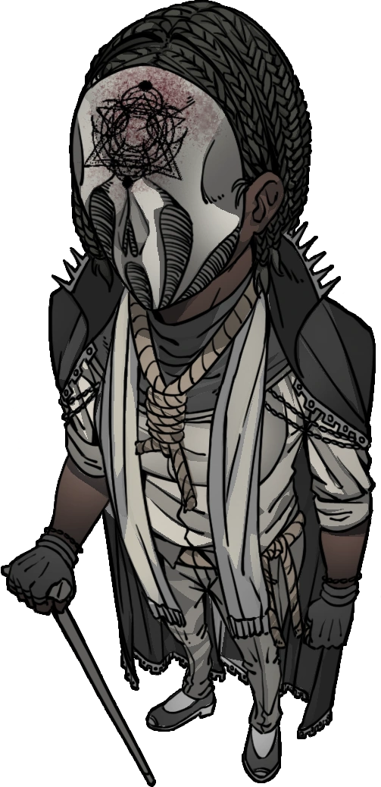
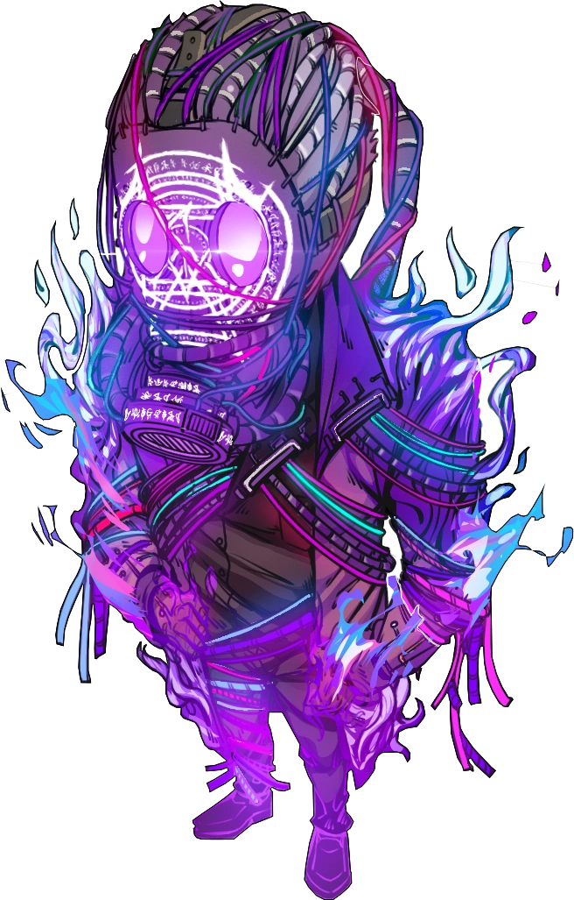
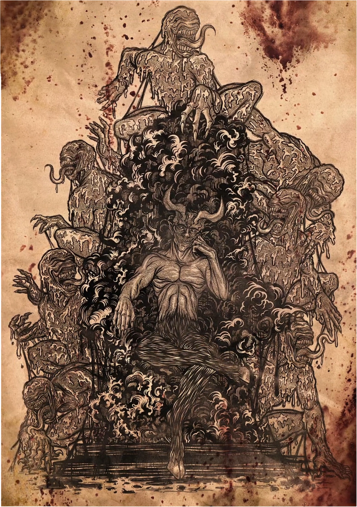
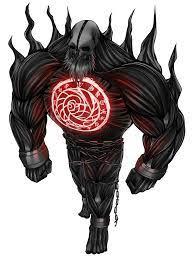

A DATABASE RAPIDA DA ORDO REALITAS
AGENTE: O Peixeiro
O QUE VOCÊ QUER SABER HOJE?
 Sangue
Sangue
 Morte
 Conhecimento
Conhecimento
 Energia
Energia
 Medo
Medo
-
ELEMENTOS DO OUTRO LADO
O conhecimento do Outro Lado pode ser dividido em cinco elementos principais

O ELEMENTO DE SANGUE
O Sangue é a entidade do sentimento.
Ele Busca a Intensidade: dor, obsessão, paixão, amor, fome, ódio.
Ele é o impulso da veemência dos sentimentos das entidades na Realidade.
Esse elemento está relacionado a emoções extremas, como dor, obsessão, paixão, amor, fome e ódio.
As cores que representam o Sangue são tons de vermelho.
O Sangue é efetivo contra o elemento de Conhecimento, porque os sentimentos extremos do Sangue superam a razão e a calmaria do Conhecimento, enquanto o elemento de Morte é efetivo contra o Sangue, pois a distorção temporal da arruína a percepção carnal do Sangue.
O comportamento da entidade de Sangue parece devorar toda a carne e sangue disponível na Realidade, causando o máximo de dor da maneira mais extrema e intensa possível.
Tudo que envolve sentir uma emoção extrema agrada a entidade de Sangue, Os sentimentos extremos do sangue superam a razão e a calmaria do Conhecimento
Tudo começa pelo Sangue. O Sangue é o fluxo que banha a eternidade do outro lado-
ELEMENTO DA MORTE
A Morte é a entidade do tempo. Ela busca os momentos vivenciados, distorcendo a percepção egóica da existência de cada indivíduo para seu próprio agrado.
A distorção temporal da Morte arruína a percepção carnal do Sangue.
Ela deve manter a cronologia da Realidade para que todas as histórias tenham um fim.
Esse elemento está relacionado à diversas características como espirais, repetição, Lodo Preto e distorção temporal, além de distorcer a percepção egóica da existência de cada indivíduo.
As cores que representam esse elemento são preto e tons de cinza.
A Morte é efetiva contra o elemento de Sangue, porque a distorção temporal da Morte arruína a percepção carnal do Sangue, enquanto o elemento de Energia é efetivo contra a Morte, pois a transformação da Energia sobrecarrega os efeitos da Morte.
Tudo tem um começo e um fim, e o tempo leva todas as coisas. Nada que é levado pela morte pode voltar ao que era antes.
-
O ELEMENTO DO CONHECIMENTO
O Conhecimento é a entidade da consciência.
Descobrir, aprender, conhecer, decifrar.
Ter a própria percepção do Outro Lado e suas entidades agrada o elemento de Conhecimento.
A razão e lógica do Conhecimento reintegram e suprimem o caos da Energia.
Ele deve manter o equilíbrio para que a Realidade suscite um propósito.
Esse elemento é caracterizado por descobrir, aprender, conhecer e decifrar, além de estar ligado diretamente aos "Sussurros do Conhecimento".
As cores que representam esse elemento são branco e tons de amarelo.
O Conhecimento é efetivo contra o elemento de Energia, porque a razão e lógica do Conhecimento reintegram e suprimem o caos da Energia, enquanto o elemento de Sangue é efetivo contra o Conhecimento, pois os sentimentos extremos do Sangue superam a razão e a calmaria do Conhecimento.
O comportamento da Entidade de Conhecimento parece estar conectado diretamente com a ideia de descobrir, lembrar, aprender e registrar informações.
Acontecimentos que foram uma grande fonte de Medo, registrados em textos, palavras ou até Sigilos, agradam e fortalecem a entidade do Conhecimento.
Compreender o Conhecimento por completo seria o equivalente a saber absolutamente tudo do Outro Lado.
Saber Tudo é Perder Tudo. O Elemento De Energia
A Energia é a entidade do caos. Tudo que não pode ser explicado, o intangível, a anarquia.
A constante mudança, o calor e o frio, a luz e as trevas.
Tudo que envolve a imprevisibilidade e a transformação agrada a entidade de Energia.
A transformação da Energia sobrecarrega os efeitos da Morte.
Ela determina a imprevisibilidade, já que nem mesmo as correntes da Realidade devem controlar tudo.
Esse elemento é caracterizado por tudo que não pode ser explicado, o intangível, a anarquia e pela transformação.
Uma das manifestações mais marcantes desse elemento é em uma forma etérea fantasmagórica, descrita como uma matéria que está em constante transformação entre os estados sólido, liquido e gasoso que adquire uma aparência de "chama líquida", nas cores que representam a Energia, sendo elas tons de roxo, azul, ciano, verde e rosa.
A Energia é efetiva contra o elemento de Morte, porque a transformação da Energia sobrecarrega os efeitos da Morte, enquanto o elemento de Conhecimento é efetivo contra a Energia, pois a razão e lógica do Conhecimento reintegram e suprimem o caos da Energia.
A Entidade de Energia se comporta diferente das outras, parecendo nunca seguir um padrão lógico específico.
Suas motivações parecem estar conectadas apenas com o seu próprio entretenimento, causando dor e agonia aos outros.
Energia representa todo o caos, a anarquia, a constante mudança e a imprevisibilidade.
O Caos é Inevitável-
O Elemento De Medo
O Medo é a entidade do desconhecido e do infinito. Presente desde os primórdios da humanidade, modifica a natureza do universo.
A sua existência diferenciada é um mistério.
O Medo é a Entidade do próprio Outro Lado e o elemento mais misterioso. Nada nele pode ser classificado como nos outros elementos.
Todas as manifestações paranormais são geradas pelo Medo. A manifestação física do Medo na Realidade é incompreensível e impossível, como se fosse uma chama transparente, distorcendo toda a realidade em sua volta.
Os poucos que presenciaram tamanha manifestação, também descreveram ter visto "um vislumbre de Deus", como se o próprio cérebro humano não pudesse processar um evento impossível como este.
disso tudo, acredita-se que a névoa misteriosa encontrada em locais com a Membrana danificada é a manifestação do Medo mais presente dentro da Realidade.
O Medo é Infinito
-

A Máscara do Desespero
A Máscara do Desespero é uma máscara branca com três grandes sulcos que descem dos olhos e da boca até a borda da máscara, já na região do nariz há uma fenda no formato de um coração invertido semelhante a uma caveira.
Se forma uma feição de aflição e desespero. Na testa da Máscara há o Símbolo da Relíquia de Conhecimento cravado.
A tradução dos sigilos do símbolo levam a repetição de uma única frase: "Nostis Omnia Perdet Omnia" (Saber tudo é perder tudo), frase guia do Elemento de Conhecimento.
O portador da Relíquia de Conhecimento é o Magistrado.
Não se sabe qual é a origem da Máscara do Desespero ou quem foi seu primeiro portador, apenas que ela está na realidade "desde o começo",e que a Seita das Máscaras, grupo formado pela mente única da Relíquia, vem há milhares de anos protegendo o equilíbrio de forma extremamente cautelosa, nunca interferindo diretamente nos acontecimentos.
Para proteger o equilíbrio, a Seita das Máscaras oferece acordos às pessoas que se tornam poderosas demais, assim lhes dando a escolha de se juntar à seita ou enfrenta-la em um combate.
A Ultima Magistrada até agora.
Saber Tudo é Perder Tudo.
Saber Tudo é Perder Tudo.
Saber Tudo é Perder Tudo.
Saber Tudo é Perder Tudo.
Saber Tudo é Perder Tudo.
-

O Anfitrião Em Sua Forma Atual
Enquanto a Relíquia de Energia não está ao encontro de um portador ou objeto, ela assume uma forma etérea não-sólida, como um raio ou uma chama infinita, mantendo-se em constante movimento e transformação.
Na sua primeira aparição ela estava contida em um cubo de metal dentro da base da Ordo Calamitas, emanando uma energia purpura quase branca de tão ofuscante e forte que era seu brilho.
No seu arredor havia uma aura distorcida como se a Realidade lutasse para conter essa presença física que ficava se desdobrando em ondas, tentando ficar em constante transformação, com tal reação da Relíquia ficando ainda mais forte quando na presença dos Marcados.
Atualmente a Relíquia tomou posse da antiga katana deJoui Jouki
SES ACHAM QUE ESSA KATANA VAI ME SEGURAR VÃO TUDO SE FU.
contida em uma bainha protegida por Sigilos colocados pela Magistrada, que quando traduzidos significam "Anfitrião".
o cara chato do caralho. foi mal agente ou senhor vérissimo, o anfitras queimou essa putaria no codigo e não tem como remover, ignora isso e continua ok.
O portador da Relíquia de Energia é o Anfitrião.
História
Como as outras Relíquias da Calamidade, não se sabe qual sua origem nem seu primeiro portador, apenas que ela está na realidade "desde o começo", e vem à milhares de anos escolhendo seus arautos em momentos extremamente oportunos de suas vidas, mesmo que eles não estejam a procura dela.
Quando encontra um portador, a Relíquia de Energia se funde com algum objeto próximo ao mesmo, posteriormente tomando controle desse indivíduo e fazendo com que cada átomo formando a estrutura molecular de sua existência comece a vibrar e se distorcer, o que resulta na mente do portador sendo invadida por uma onda de personalidades e tomada por pensamentos diferentes e inconsequentes.
O Anfitrião apenas se preocupa em se divertir com o Caos, distorcendo as regras da Realidade em seus próprios jogos.
Anfitriao Em Possê do corpo do Agente De Elite Da Ordem
"Arnaldo Fritz"
Amavamos seus filmes descanse em Paz.
-
Trono Do Diabo Desenhado.
infelizmente estamos procurando mais informações sobre essa reliquia aqui estão as informações que a equipe Abutre conseguiu reunir
O Trono é descrito como uma forma sólida física que transforma seus arredores em um ambiente de carnificina, monstruosidades e obsessão.
Até o momento apenas se tem a ilustração dessa Relíquia.

História
O portador da Relíquia de Sangue é o Diabo.
Como as outras Relíquias da Calamidade, não se sabe qual sua origem nem seu primeiro portador, apenas que ela está na realidade "desde o começo",e que pode se forçar em seu próximo portador caso decida que ele é "digno" de ser seu "herdeiro".
Não se sabe como ocorre a transformação do portador no Diabo, porém, sabe-se que diferente das outras Relíquias, seu portador pode conversar e agir por si próprio, além do Diabo.
O portador consegue oferecer ou aceitar um "Pacto" - um trato capaz de gerar um vínculo de dependência obsessiva, resultando numa troca mútua entre as figuras envolvidas. Para realizar este trato, é necessário um símbolo conhecido como a "Marca do Pacto".
Sabe-se que em algum momento de 67 d.C., a Ordo Calamitas já possuía essa Relíquia em suas instalações, apesar de ser desconhecido como e quando ela foi capturada.
Atualmente a Relíquia está possivelmente em posse de Henri, um dos Escriptas que sobreviveu ao Dia Final da Desconjuração. -
Reliquia Da Morte
O Parasita de Dimensões se manifesta como um enorme coração feito de Lodo Preto, espiralizado e conectado por vários tentáculos.
Nessa forma, ela infecta os seus arredores, consumindo sua Entropia e formando um Vilarejo Anacrônico com diversos nomes, sendo eles, Santo Berço, Início Sagrado, Princípio Divino ou Começo Eterno.
Essa relíquia possuí a capacidade de infectar um corpo com alta Exposição Paranormal, se tornando uma entidade extremamente poderosa e perigosa, dona do próprio Tempo, conhecida apenas como Deus da Morte.
História
Portador da Relíquia de Morte é desconhecido, porém sua manifestação física é o Deus da Morte.
Como as outras Relíquias da Calamidade, não se sabe qual sua origem nem seu primeiro portador, apenas que ela está na Realidade "desde o começo".
A Relíquia de Morte se manifesta em ciclos, movimentando-se pelo tempo, e não pelo espaço, podendo estar em vários pontos ao mesmo tempo, tendo a capacidade de imortalizar sua própria existência com a transferência de receptáculos.
As cidades formadas pela Relíquia se manifestam a partir de Símbolos Espirais, que variam de um para o outro, como se nenhuma cidade conseguisse realizá-los corretamente.
Essa é a única relíquia que a Ordo Calamitas não conseguiu capturar. Porém, um ataque direto da Relíquia de Morte aconteceu a base em 67 d.C. Essa entidade foi chamada de "Tempo" por Amphitruo, assim que o mesmo o dispersou.
A localização exata dessa Relíquia permanece um mistério no momento atual, porém se sabe que durante a Missão "O Segredo na Floresta", o Deus da Morte não foi completamente derrotado, visto que O Agente Ocultista
"Dante"
ao ir em Carpazinha, sentiu uma aura extremamente poderosa e terrível.
Até o momento, nenhum portador da Relíquia de Morte foi apresentado.
Além do Deus Da Morte sendo um potencial "portador" da relíquia Aqui esta um desenho feito por um agente artista da ordem com a descrição dada pelos agentes que participarão da missão "O Segredo Na Floresta"
É possível destruir a própria Morte?
-
??????????????????????????????